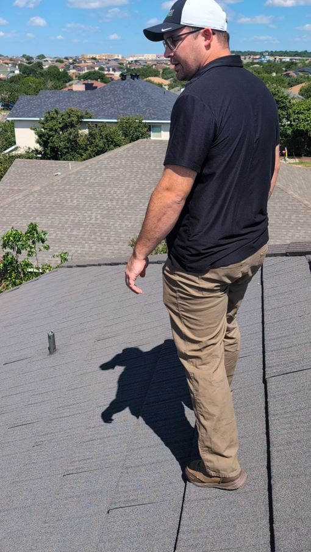

Why a Professional Roof Inspection Matters
Your roof is your home's first line of defense against Central Texas heat, hail, wind, and heavy rain. Many roofing problems aren't visible from the ground—and by the time leaks appear inside, damage has often already occurred.
At Green Shield Roofing, our roof inspection services are designed to identify hidden issues early, document roof condition accurately, and give you clear, honest guidance on next steps—whether repairs are needed or not.
Unlike free "sales inspections," our inspections are performed by experienced roofers who understand roofing systems, storm damage patterns, and material failure—not commissioned salespeople.
Request an Inspection
What Our Roof Inspections Help Identify
Storm & Hail Damage
We identify hail impacts, wind damage, lifted shingles, and compromised components common after Central Texas storms.
Active & Potential Leaks
Inspections focus on common leak points like flashing, penetrations, valleys, and drainage areas.
Material Wear & Aging
We assess shingles, tile, or metal roofing for age-related deterioration and remaining service life.
Installation Defects
Poor workmanship, improper fasteners, or incorrect flashing details are identified and documented.
Ventilation Issues
Improper attic ventilation can shorten roof life and increase energy costs—we check for common problems.
Insurance & Documentation Needs
Clear photo documentation and reports suitable for insurance claims or homeowner records.
What's Included in Our Roof Inspection Service
✓ Full roof system inspection
✓ Inspection of shingles, flashing, penetrations & drainage
✓ Photo documentation of findings
✓ Honest condition assessment
✓ Clear repair or replacement recommendations (if needed)
✓ Zero pressure or sales tactics
Who Our Roof Inspection Services Are For
- Homeowners after hail or wind storms
- Buyers & sellers needing real estate roof inspections
- Homeowners experiencing leaks or ceiling stains
- Property owners unsure of roof condition or age
- Insurance claim documentation support
- Preventative roof evaluations
Roof Inspection Services Across Central Texas
- Travis County: Austin, Manchaca, Lakeway, Bee Cave, Wells Branch, Sunset Valley
- Williamson County: Round Rock, Georgetown, Cedar Park, Leander, Liberty Hill
- Bell County: Killeen, Harker Heights, Temple, Copperas Cove, Belton
- Guadalupe County: Seguin, Schertz, Cibolo
- Bexar County: San Antonio, Live Oak, Alamo Heights, Stone Oak, Universal City
- Comal County: New Braunfels, Bulverde
Get Clarity About Your Roof
Whether you're dealing with storm damage, a leak, or just want to know the true condition of your roof, a professional inspection provides peace of mind and protects your investment.
Schedule Your Roof Inspection